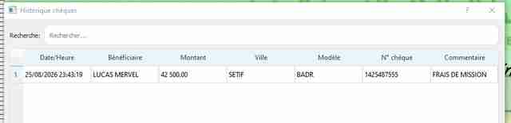

✓
Préparation
Saisissez le bénéficiaire, le montant, la ville, la date et le commentaire, puis préparez plusieurs chèques à l’avance.
Préparez, imprimez et archivez vos chèques simplement.
Une application conçue pour gérer plusieurs modèles bancaires, préparer des séries de chèques, contrôler leur mise en page et conserver un PDF GED associé à chaque opération.
Windows 10 / 11 • Version 64 bits
Saisissez le bénéficiaire, le montant, la ville, la date et le commentaire, puis préparez plusieurs chèques à l’avance.
Le montant numérique est automatiquement converti en toutes lettres et placé sur le modèle du chèque.
Plusieurs banques peuvent être utilisées, avec réglage précis des positions, tailles, polices et offsets d’impression.
Importez une liste de chèques depuis un fichier CSV et imprimez-les ensuite un par un.
Après impression, générez le PDF d’archive avec le numéro du chèque conservé automatiquement.
Retrouvez les chèques déjà traités avec banque, numéro, bénéficiaire, montant, date et commentaire.
Interface réelle
Ces captures proviennent directement de l’application et montrent le travail quotidien : saisie, préparation, aperçu, réglage des modèles, choix des banques et historique.
Saisissez un chèque, chargez une opération préparée et vérifiez le rendu sur le scan avant impression.
Ajustez précisément chaque modèle, choisissez la banque et contrôlez les paramètres de mise en page.

Suivi
Retrouvez rapidement la date, le bénéficiaire, le montant, la ville, le modèle, le numéro du chèque et le commentaire.
Cliquez sur une capture pour l’ouvrir en grand.
Mode Impression
Choisissez la banque, saisissez les informations du chèque, contrôlez le résultat sur le scan puis ajoutez-le à la liste de préparation. Le numéro du chèque est associé lors de l’impression et reste lié au PDF GED et à l’historique.
Choisir la banque
Saisir le chèque
Contrôler l’aperçu
Imprimer et archiver
Mode Réglage
Le mode Réglage permet d’ajuster le scan, les positions des champs, les dimensions, les tailles de texte, la police et les offsets imprimante sans surcharger le mode Impression.
Téléchargez l’installateur Windows 64 bits.